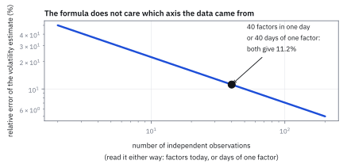
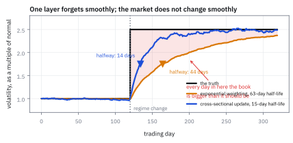
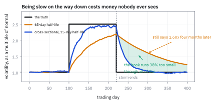
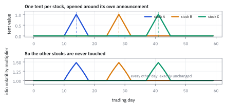

27.3 Short-Term Volatility Updating
EWMA ที่ half-life 63 วันตามพายุไม่ทัน แต่วันเดียวมี factor 40 ตัวให้ดูพร้อมกัน ถ้าทุกตัวเหวี่ยงแรงกว่าที่ model คาด นั่นคือหลักฐานหนักพอจะคูณความเสี่ยงทั้งก้อนขึ้นภายในไม่กี่วัน
model 40 factor ของ 27.2 อัปเดตความผันผวนด้วย EWMA ที่ half-life 63 วัน วันนี้ตลาดเข้าสู่พายุ ความผันผวนจริงของทุก factor กลายเป็น 2.5 เท่าของเดิมและอยู่อย่างนั้น ต้องผ่านกี่วัน ความผันผวนที่ model รายงานจึงขึ้นมาถึงครึ่งทาง (1.75 เท่า)? เพื่อนตอบทันทีว่า “63 วัน ก็ half-life ไง”
ลองตอบก่อนเปิดเฉลย
46 วัน ไม่ใช่ 63 half-life 63 วันคือจุดที่ variance มาถึงครึ่งทาง ความผันผวนเป็นรากที่สองของ variance จึงถึงครึ่งทางเร็วกว่า แต่ก็ยังช้า และกว่าจะถึง 90% ของทางต้องรอ 180 วัน เกือบทั้งปีที่พอร์ตใหญ่เกินจริง ถ้าเพิ่มตัวคูณที่ดูทั้ง 40 factor ของแต่ละวันพร้อมกัน (half-life 15 วัน) จะถึงครึ่งทางในวันที่ 10 และ 90% ในวันที่ 22
สิ่งที่เราจะสร้าง
27.2 สร้าง covariance ของ factor ด้วย EWMA ที่ลืมอดีตอย่างราบรื่น ซึ่งดีในวันปกติ แต่ตลาดเปลี่ยนภาวะแบบกระโดด การลด half-life ลงตรง ๆ ทำให้ค่าประมาณของแต่ละ factor เหวี่ยงทุกวัน หน้านี้หาข้อมูลที่ EWMA ของแต่ละ factor ไม่ได้ใช้: ในวันเดียว factor ทั้ง 40 ตัวบอกเรื่องเดียวกันว่าวันนี้ตลาดปั่นป่วนกว่าที่ model คิดแค่ไหน
ลำดับคือ คิดความช้าของชั้นล่างด้วยสูตรปิด ดูว่าภาพตัดขวางของวันเดียวมีข้อมูลเท่าไร ตั้ง model ที่มีตัวคูณร่วม และได้สูตรอัปเดตแบบ EWMA ของ 25.5 อีกชั้น ทดลองกับพายุทั้งขาขึ้นและขาลง แล้วจบที่รุ่นของส่วนเฉพาะตัวซึ่งเปิดเฉพาะรอบวันประกาศผลประกอบการ
ศัพท์ที่ใช้ในหัวข้อนี้
- Short-term volatility updating (STVU)
- ตัวคูณที่ปรับ covariance ของ factor ทั้งก้อนขึ้นหรือลง จากขนาดของ factor return ทุกตัวในแต่ละวัน ใช้เติมบนชั้นล่างที่ตอบสนองช้า
- Cross-section (ภาพตัดขวาง)
- ข้อมูลของทุก factor หรือทุกหุ้นในวันเดียวกัน ต่างจาก time series ที่ดูตัวเดียวข้ามหลายวัน
- Whitening
- หาร factor return ด้วยความผันผวนแล้วถอด correlation ออก ด้วย $\mathbf C^{-1/2}$ ถ้า model ถูก ผลที่ได้คือ Normal มาตรฐานที่เป็นอิสระกัน $m$ ตัว
- Latent state
- ตัวแปรที่มองไม่เห็นแต่ขับสิ่งที่เห็น ที่นี่คือระดับความปั่นป่วนร่วมของวันนั้น ประมาณด้วย Kalman filter แบบ 25.5
- Earnings tent
- ตัวคูณรูปสามเหลี่ยมรอบวันประกาศผลประกอบการของหุ้นแต่ละตัว เป็น 1 ในวันประกาศแล้วลดลงเป็น 0 ใช้ให้การปรับความเสี่ยงเฉพาะตัวเกิดเฉพาะหุ้นที่มีข่าว
สัญลักษณ์และหน่วย
| สัญลักษณ์ | ความหมาย | หน่วย |
|---|---|---|
| $\mathbf f_t,\ m$ | factor return ของวัน $t$ และจำนวน factor (40) | % ต่อวัน, จำนวน |
| $\mathbf V,\ \mathbf C$ | ความผันผวน (แนวทแยง) และ correlation จากชั้นล่างของ 27.2 | % ต่อวัน, ไม่มีหน่วย |
| $\mathbf u_t,\ \boldsymbol\eta_t$ | factor return หลัง whitening และก้อนสุ่ม Normal มาตรฐาน | ไม่มีหน่วย |
| $x_t,\ M_t$ | ระดับความปั่นป่วนที่มองไม่เห็น และตัวคูณความผันผวนที่ประมาณได้ | ไม่มีหน่วย |
| $\lambda,\ \lambda_0$ | ตัวคูณการลืมของชั้นล่าง (half-life 63 วัน) และของตัวคูณ (half-life 15 วัน) | ไม่มีหน่วย |
| $a_{i,t},\ \tau_{\rm earn}$ | ค่าของ tent ของหุ้น $i$ ในวัน $t$ และครึ่งความกว้างของ tent | ไม่มีหน่วย, วันทำการ |
ขั้นที่ 1 — ชั้นล่างตามพายุช้าแค่ไหน
ก่อนแก้ต้องวัดขนาดของปัญหา ให้ความผันผวนเดิมเป็น 1 และจริงเป็น 2.5 ตั้งแต่วันแรกของพายุ ถ้าไม่มีเสียงรบกวน $\hat f^2$ ของทุกวันในพายุเท่ากับ $2.5^2=6.25$ EWMA ของ 25.5 ให้น้ำหนักรวม $1-\lambda^k$ กับ $k$ วันล่าสุด ส่วนที่เหลือยังเป็นของวันปกติ
บรรทัดที่สามคือคำตอบของเพื่อนในโจทย์ half-life บอกว่าเมื่อไรน้ำหนักครึ่งหนึ่งอยู่ในพายุ ซึ่งคือเมื่อ variance มาถึงครึ่งทางพอดีในวันที่ 63 แต่ความผันผวนคือรากของ variance และรากโค้งขึ้นเร็วตอนต้น ครึ่งทางของความผันผวน (1.75) ต้องการ variance แค่ 3.0625 จึงมาถึงหลังข้อมูล 45.35 วัน หรือในวันที่ 46
ได้ $k$ ด้วยการถอด log: $k=\ln(0.6071)/\ln\lambda$ กับ $\lambda=0.5^{1/63}$ หรือ $k=63\times\log_2(1/0.6071)$ ส่วน 90% ของทาง (2.35) ต้องรอ 179.63 วัน ตลอดช่วงนั้นความเสี่ยงที่รายงานต่ำกว่าความจริง พอร์ตที่ใช้เพดานความเสี่ยงคงที่จึงใหญ่เกินไปทุกวัน
ขั้นที่ 2 — ข้อมูลที่ชั้นล่างทิ้ง: 40 factor ในวันเดียว
ชั้นล่างอัปเดต factor แต่ละตัวจากประวัติของมันเอง แต่ทุกวันเรามี factor 40 ตัวพร้อมกัน ถ้าหารแต่ละตัวด้วยความผันผวนที่ model คิด แล้วถอด correlation ออก (whitening) และ model ถูก ผลที่ได้ $\mathbf u_t$ คือ Normal มาตรฐาน 40 ตัวที่เป็นอิสระกัน ขนาดรวมของมันจึงบอกระดับความปั่นป่วนของวันนั้นได้
แต่ละ $u_k^2$ มีค่าเฉลี่ย 1 และ variance 2 (moment ที่สี่ของ Normal คือ 3 ลบค่าเฉลี่ยกำลังสองได้ 2) รวม 40 ตัวที่เป็นอิสระกันได้บรรทัดที่สองและสาม บรรทัดสุดท้ายถอดราก ซึ่งลดความคลาดสัมพัทธ์ลงเหลือครึ่งเดียว เพราะ $\sqrt{1+e}\approx1+e/2$ เมื่อ $e$ เล็ก
ถ้าความผันผวนจริงเป็น 2.5 เท่าของที่ model คิด $\lVert\mathbf u_t\rVert/\sqrt m$ จะอยู่ราว 2.5 และคลาดแค่ 11.2% จากวันเดียว เท่ากับการดู factor ตัวเดียวย้อนหลัง 40 วัน ทำไมต้องถอด correlation: ถ้า factor สองตัวขยับเกือบเหมือนกัน การนับทั้งคู่คือการนับเรื่องเดียวสองครั้ง $\mathbf C^{-1/2}$ ทำให้ 40 ตัวเป็นหลักฐานที่แยกกันจริง
Figure 27.3a — 40 factor ในวันเดียว เท่ากับ 40 วันของ factor เดียว

แกนนอนคือจำนวนข้อมูลที่เป็นอิสระกัน 2 ถึง 200 แกนตั้งคือความคลาดสัมพัทธ์ของความผันผวนที่ประมาณได้ $\tfrac12\sqrt{2/k}$ เป็น % ทั้งสองแกนเป็นสเกล log เส้นเดียวกันอ่านได้สองแบบตามป้ายใต้แกน: จำนวน factor ในวันเดียว หรือจำนวนวันของ factor เดียว จุดดำคือ 40 ซึ่งให้ 11.2% เท่ากันทั้งสองแบบ สูตรไม่สนว่าข้อมูลมาจากแกนไหน
ขั้นที่ 3 — model ที่มีตัวคูณร่วม และสูตรอัปเดต
ใส่ความคิดของขั้นที่ 2 ลงใน model: เพิ่มสถานะที่มองไม่เห็น $x_t$ หนึ่งตัวที่ขยาย factor ทุกตัวพร้อมกัน นี่คือนิยามของ model ถ้า $x_t=0$ ตลอดจะกลับเป็น model ของ 27.2 พอดี จากนั้นดูว่าหลัง whitening เหลืออะไร
บรรทัดที่สี่คือกุญแจ มันคือ state-space model แบบ 25.5: สิ่งที่เห็นคือ $\ln\lVert\mathbf u_t\rVert^2$ ซึ่งเท่ากับสถานะ $x_t$ บวกเสียงรบกวน $\ln\lVert\boldsymbol\eta_t\rVert^2$ ที่รู้ขนาด คำตอบที่ดีที่สุดของ 25.5 คือ EWMA ของสิ่งที่เห็น (หลังหักค่าเฉลี่ยของเสียง ซึ่งประมาณ $\ln m$)
บรรทัดที่ห้าคือรุ่นเชิงเส้นที่เขียนในโค้ดจริง: EWMA ของ $\lVert\mathbf u_t\rVert/\sqrt m$ ซึ่งใกล้ $e^{x_t/2}$ เมื่อ model ถูก $M_t$ อยู่ราว 1 ถ้าได้ 1.8 แปลว่าต้องคูณความผันผวนทุกตัวขึ้น 1.8 เท่า บรรทัดสุดท้ายคูณทั้งก้อนด้วยตัวเลขเดียว correlation และสัดส่วนระหว่าง factor จึงไม่ถูกแตะ เพราะ 27.2 แสดงว่าสองอย่างนั้นต้องการข้อมูลยาว
ขั้นที่ 4 — ทำไม half-life 15 วันจึงไม่เหวี่ยง
คำถามที่ควรถาม: ถ้าลด half-life ของ factor แต่ละตัวเหลือ 15 วันแล้วเหวี่ยง ทำไมตัวคูณที่ half-life 15 วันเท่ากันจึงไม่เหวี่ยง? นับข้อมูลด้วย $N_{\rm eff}$ ของ 27.2 ขั้นที่ 6 แล้วคูณด้วยจำนวน factor ที่ตัวคูณเห็นในแต่ละวัน
ตัวคูณที่ half-life 15 วันเห็นข้อมูล 1,731.5 ชิ้น จึงคลาดแค่ 1.70% น้อยกว่าชั้นล่างที่ half-life 63 วัน (5.24% ต่อ factor ตาม 27.2) ทั้งที่เร็วกว่าสี่เท่า
ส่วนการลด half-life ของ factor แต่ละตัวเหลือ 15 วันได้ข้อมูลแค่ 43.29 ชิ้นต่อตัว คลาด 10.75% ความเร็วของตัวคูณจึงมาจากการรวม 40 factor ไม่ใช่จาก half-life สั้นเฉย ๆ
ในภาษาของ 25.5: variance ของ $\ln\lVert\boldsymbol\eta\rVert^2$ เมื่อ $\lVert\boldsymbol\eta\rVert^2$ เป็น chi-square $m$ ตัวคือ trigamma ของ $m/2$ ที่ $m=40$ คือ $\pi^2/6-\sum_{k=1}^{19}1/k^2=0.05127$ หรือ SD 0.2264 ที่ $m=1$ คือ $\pi^2/2$ หรือ SD 2.2214 (ตัวเลข 2.22 ของ Harvey–Shephard ใน 25.5) เสียงเบาลง 9.81 เท่า $\kappa$ จึงเล็กลงเท่านั้น และ Kalman gain ที่ดีที่สุดจึงใหญ่ขึ้นมาก
ขั้นที่ 5 — พายุขาขึ้น: สองชั้นทำงานพร้อมกัน
โจทย์ให้อะไรมาบ้าง: ความผันผวนจริงของทุก factor กระโดดจาก 1 เป็น 2.5 ในวันที่ 0 ชั้นล่าง EWMA half-life 63 วัน ตัวคูณ half-life 15 วัน คิด $\mathbf u$ โดยหารด้วยความผันผวนของชั้นล่างวันนั้น ค่าที่พยากรณ์ให้วัน $d$ ใช้ข้อมูลถึงวัน $d-1$ และไม่มีเสียงรบกวน: ทุกวันป้อนค่าที่คาดหมายพอดี ($\hat f^2=\sigma^2$ และ $\lVert\mathbf u\rVert/\sqrt m=\sigma/\sqrt{v}$) เพื่อดูความช้าล้วน ๆ วันแรกคิดด้วยมือ
| วันที่ $d$ | ชั้นล่างอย่างเดียว | สองชั้น ($\sqrt{v}\,M$) |
|---|---|---|
| 1 | 1.0283 | 1.0980 |
| 5 | 1.1318 | 1.4512 |
| 10 | 1.2438 | 1.8098 |
| 20 | 1.4272 | 2.2973 |
| 40 | 1.6938 | 2.6995 |
| 80 | 2.0181 | 2.7308 |
คำตอบ: สองชั้นถึงครึ่งทาง (1.75) ในวันที่ 10 แทนวันที่ 46 และถึง 90% (2.35) ในวันที่ 22 แทนวันที่ 180 ราคาที่จ่ายคือการเลยเป้า: ค่าสูงสุด 2.7649 ในวันที่ 59 เกินความจริง 10.6% เพราะ $M$ ยังจำวันต้นพายุที่ชั้นล่างยังต่ำอยู่มาก ขณะที่ชั้นล่างไล่ขึ้นมาแล้ว ผลคูณจึงนับความปั่นป่วนซ้ำไปช่วงหนึ่ง แล้วค่อยลงมาหา 2.5 เมื่อ $M$ ลืมวันเหล่านั้น
ตรวจเองใน 10 วินาที: วันแรก $\lVert\mathbf u\rVert/\sqrt m=2.5/1=2.5$ ส่วนที่เกิน 1 คือ 1.5 ได้น้ำหนัก $1-\lambda_0=0.0452$ จึงได้ $1+1.5(0.0452)=1.0677$ ชั้นล่างได้ส่วนเกินของ variance 5.25 คูณ $1-\lambda=0.0109$
Figure 27.3b — ไล่ตามการกระโดด

การจำลองหนึ่งเส้นทาง factor 40 ตัว 320 วัน (numpy seed 19) ความผันผวนจริง (เส้นขั้นบันไดดำ) กระโดดจาก 1 เป็น 2.5 ในวันที่ 120 เส้นส้มคือ EWMA half-life 63 วันของค่าเฉลี่ย $f^2$ ข้าม 40 factor เส้นฟ้าคือ EWMA half-life 15 วันของ $\lVert\mathbf f\rVert/\sqrt{40}$ ที่เทียบกับระดับก่อนพายุคงที่ ไม่ได้คูณกับชั้นล่างแบบขั้นที่ 5
ลูกศรบอกครึ่งทางที่ 14 วันและ 44 วันจากเส้นทางนี้ ถ้าไม่มีเสียงรบกวน เส้นฟ้าคือ $2.5-1.5\lambda_0^{d+1}$ ถึงครึ่งทางในวันที่ 14 พอดี และเส้นส้มในวันที่ 46 ตามขั้นที่ 1 แถบแดงจางคือช่วงที่เส้นส้มต่ำกว่าความจริง ป้ายบอกว่าทุกวันในช่วงนั้นพอร์ตใหญ่เกินที่ควร
ขั้นที่ 6 — พายุขาลง: เจ็บเงียบกว่า
โจทย์ให้อะไรมาบ้าง: พายุเดียวกันอยู่ 120 วันแล้วจบ ความผันผวนจริงกลับเป็น 1 ทันที ใช้การคำนวณเดิมต่อ และถามว่าถ้าพอร์ตตั้งเพดานความเสี่ยงคงที่ ขนาดพอร์ตที่ model อนุญาตคือ 1 หารด้วยความผันผวนที่รายงาน
| วันหลังพายุจบ | ชั้นล่างอย่างเดียว | สองชั้น |
|---|---|---|
| 5 | 2.1545 | 2.2504 |
| 20 | 2.0219 | 1.5412 |
| 40 | 1.8649 | 1.1462 |
| 80 | 1.6111 | 0.9564 |
คำตอบ: 80 วันหลังพายุจบ ชั้นล่างยังบอก 1.6111 เท่า พอร์ตจึงถูกบังคับให้เล็กเหลือ $1/1.6111=62.1\%$ ของขนาดที่ควร เล็กไป 37.9% ทั้งที่ตลาดปกติมาสี่เดือนแล้ว สองชั้นบอก 0.9564 พอร์ตใหญ่ไป 4.6% ซึ่งเป็นการเลยเป้าขาลงแบบเดียวกับขั้นที่ 5
ตรวจเองใน 10 วินาที: ทั้งสองแบบเริ่มขาลงใกล้กัน (2.1545 กับ 2.2504) เพราะทั้งคู่เพิ่งเห็นพายุ 120 วันเท่ากัน ความต่างทั้งหมดอยู่ที่ความเร็วในการปล่อย ความเสียหายขาลงไม่ปรากฏในรายงานไหน เพราะมันคือกำไรที่ไม่เคยเกิด
Figure 27.3c — ขาลง: ค้างสูงอยู่สี่เดือนหลังพายุจบ

การจำลองหนึ่งเส้นทาง factor 40 ตัว 400 วัน (numpy seed 23) พายุอยู่วันที่ 100 ถึง 219 เส้นส้มและเส้นฟ้าสร้างแบบเดียวกับ Figure 27.3b ป้ายส้มบอกว่า 80 วันหลังพายุจบ ชั้นล่างยังบอก 1.60 เท่า ตรงกับ 1.6111 ของขั้นที่ 6 แถบเขียวคือช่วงระหว่างสองเส้น ป้ายเขียวบอกว่าพอร์ตเล็กไป 38% “ตลอดช่วงนี้” แต่ 38% เป็นค่าที่วันที่ 80 เท่านั้น ช่วงต้นเล็กไปมากกว่า เช่นวันที่ 20 ชั้นล่างบอก 2.0219 พอร์ตเล็กไปราวครึ่งหนึ่ง
ขั้นที่ 7 — รุ่นของส่วนเฉพาะตัว: เปิดเฉพาะรอบวันประกาศผล
ความผันผวนเฉพาะตัวของหุ้น (27.4) ก็กระโดดได้ แต่ส่วนใหญ่กระโดดอย่างคาดได้รอบวันประกาศผลประกอบการ ถ้าคิดตัวคูณจากหุ้นทุกตัว วันที่หุ้นไม่กี่ตัวประกาศผลจะดันความเสี่ยงของหุ้นทั้งตลาด ทางแก้คือ tent ที่เปิดเฉพาะหุ้นที่อยู่ในหน้าต่าง นี่คือนิยาม ($\epsilon_{i,t}/\hat\sigma_{i,t}$ คือส่วนเฉพาะตัวหลังหารด้วยความผันผวนของมัน)
$T_i$ คือวันประกาศผลของหุ้น $i$ บรรทัดที่สองเฉลี่ยขนาดของส่วนเฉพาะตัวเฉพาะหุ้นที่ tent เปิด บรรทัดสุดท้ายคือสิ่งที่ทำให้ปลอดภัย หุ้นที่อยู่นอกหน้าต่างมี $a=0$ วงเล็บเป็น 1 พอดี ความเสี่ยงของมันไม่ขยับเลย หุ้นที่ประกาศวันนี้มี $a=1$ ได้ตัวคูณเต็ม
ตัวอย่าง: $\tau_{\rm earn}=4$ วัน และ $M^2=2.2$ ในวันประกาศความผันผวนคูณ $\sqrt{2.2}=1.4832$ ห่างหนึ่งวัน $a=0.75$ ได้ $\sqrt{0.25+0.75(2.2)}=1.3784$ ห่างสองวัน $\sqrt{1.6}=1.2649$ ห่างสามวัน $\sqrt{1.3}=1.1402$ ห่างสี่วันขึ้นไปได้ 1 พอดี
Figure 27.3d — tent ของใครของมัน

แผงบนคือ tent ของหุ้น A, B และ C ที่ประกาศผลวันที่ 14, 28 และ 41 ครึ่งความกว้าง 4 วันทำการ (เส้นประคือวันประกาศ) แผงล่างคือตัวคูณความผันผวนเฉพาะตัว $\sqrt{(1-a)+2.2a}$ ของแต่ละหุ้น สูงสุด 1.4832 ในวันประกาศ และเป็น 1 พอดีทุกวันที่อยู่นอก tent ของตัวเอง ป้ายบอกว่าหุ้นอื่นไม่ถูกแตะเลย
คำถามที่ควรถามออกมาดัง ๆ
ทำไมไม่ใส่ตัวคูณแยกให้ factor แต่ละตัว? เพราะตัวคูณแยกตัวเห็นข้อมูลวันละชิ้น กลับไปเป็น EWMA 15 วันของ factor ตัวเดียวที่คลาด 10.75% และ correlation ที่ประมาณด้วยข้อมูลยาวใน 27.2 จะถูกบิดด้วยข้อมูลสองสัปดาห์ ตัวคูณเดียวแลกความละเอียดกับความแม่น
ถ้าตัวคูณไม่กลับมาที่ 1 หลังพายุสงบล่ะ? ตัวคูณควรเดินรอบ 1 ในระยะยาว ถ้ามันค้างสูงหลายเดือนทั้งที่ตลาดสงบ ปัญหาไม่ได้อยู่ที่ตลาด แต่อยู่ที่ชั้นล่าง เช่นมี factor ที่ขาดไป ทำให้ $\lVert\mathbf u\rVert$ ใหญ่เรื้อรัง ตัวคูณจะซ่อนปัญหานั้นไว้ถ้าไม่มีใครดู
การเลยเป้า 10.6% ในขั้นที่ 5 ยอมได้ไหม? ชั้นล่างอย่างเดียวรายงานต่ำกว่า 2.0 หรือต่ำกว่าความจริงเกิน 20% จนมีข้อมูลพายุครบ 77.01 วัน (ถึง 2.0 ในวันที่ 78) การเลยเป้าชั่วคราวราคาถูกกว่า และขาขึ้นมันเลยไปฝั่งปลอดภัย คือพอร์ตเล็กไป ขาลงมันเลยไปฝั่งพอร์ตใหญ่ไป 4.6% ซึ่งต้องเฝ้าดู
ความผิดที่ให้ตัวเลขผิดแบบเงียบ ๆ
ให้ factor ตัวเดียวดันทั้งก้อน: ถ้ามีแค่ factor เดียวที่กระโดดเป็น 2.5 เท่า ส่วนอีก 39 ตัวปกติ $\lVert\mathbf u\rVert/\sqrt{40}=\sqrt{(39+6.25)/40}=1.0636$ ตัวคูณดันความผันผวนของ 39 ตัวที่ไม่ได้เป็นอะไรขึ้น 6.4% ขณะที่ตัวที่กระโดดจริงได้แค่ 6.4% จากตัวคูณ ที่เหลือต้องรอชั้นล่าง ตัวคูณเหมาะกับพายุที่พัดทั้งตลาด ไม่ใช่เหตุเฉพาะของ factor เดียว
ใช้ข้อมูลวันนี้พยากรณ์วันนี้: ถ้า $M_t$ ที่ใช้คิดความเสี่ยงของวัน $t$ รวม $\mathbf u_t$ ของวันเดียวกัน model จะดูเหมือนตามพายุได้ทันใน backtest เพราะรู้ล่วงหน้าไปหนึ่งวัน ตารางในขั้นที่ 5 ใช้ข้อมูลถึงวัน $d-1$ เท่านั้น
ใช้ตัวคูณของส่วนเฉพาะตัวกับทุกหุ้น: วันที่บริษัทใหญ่ไม่กี่แห่งประกาศผล ตัวคูณที่คิดจากทุกหุ้นจะดันความเสี่ยงของหุ้นหลายร้อยตัวที่ไม่มีข่าว tent ในขั้นที่ 7 มีไว้เพื่อสิ่งนี้
ใช้ทำอะไรบนโต๊ะจริง
รายงานความเสี่ยงยามเช้าแสดงตัวคูณของวันนั้นคู่กับความเสี่ยง ถ้าตัวคูณพุ่งจาก 1.0 เป็น 1.5 ในสัปดาห์เดียว โต๊ะรู้ว่าต้องลดขนาดพอร์ตก่อนที่ชั้นล่างจะยอมรับ และเมื่อตัวคูณลงมาต่ำกว่า 1 หลังพายุ โต๊ะรู้ว่าชั้นล่างยังค้างสูงและพอร์ตเล็กเกินจำเป็น ตัวเลขทั้งสองทิศเปลี่ยนการตัดสินใจเรื่องขนาดพอร์ตโดยตรง
สามโจทย์ตรวจความเข้าใจ
1. ถ้าชั้นล่างใช้ half-life 126 วันแทน 63 และไม่มีตัวคูณ ความผันผวนที่รายงานจะถึงครึ่งทาง (1.75) ของพายุ 2.5 เท่าในวันที่เท่าไร?
เฉลย
$\lambda^k=0.6071$ เหมือนเดิม $k=126\times\log_2(1/0.6071)=126\times0.7199=90.71$ จึงเป็นวันที่ 91 ช้าเป็นสองเท่าของ 45.35 วัน เพราะ $k$ แปรตรงกับ half-life
2. model ที่มีแค่ 10 factor ใช้ตัวคูณแบบเดียวกัน ข้อมูลวันเดียวคลาดเท่าไร และตัวคูณที่ half-life 15 วันคลาดเท่าไร?
เฉลย
วันเดียว $1/\sqrt{2(10)}=0.2236$ หรือ 22.4% ตัวคูณ $1/\sqrt{2(43.29)(10)}=3.40\%$ แย่กว่า 1.70% ของ 40 factor เพราะข้อมูลต่อวันน้อยกว่าสี่เท่า ความคลาดจึงโตสองเท่า
3. หุ้นที่ประกาศผลเมื่อสองวันก่อน ใช้ $\tau_{\rm earn}=5$ และ $M^2=3$ ความผันผวนเฉพาะตัวถูกคูณเท่าไร?
เฉลย
$a=1-2/5=0.6$ วงเล็บ $0.4+0.6(3)=2.2$ ความผันผวนคูณ $\sqrt{2.2}=1.4832$ เท่ากับวันประกาศของตัวอย่างในขั้นที่ 7 พอดี
คำนวณซ้ำด้วย JavaScript
โค้ดนี้คิดความช้าของชั้นล่างด้วยสูตรปิด เดินระบบสองชั้นแบบไม่มีเสียงรบกวนผ่านพายุขาขึ้นและขาลง หาวันที่ถึงครึ่งทางและ 90% จุดเลยเป้า ขนาดพอร์ตที่วันที่ 80 นับข้อมูลของภาพตัดขวาง คิด trigamma ของ 25.5 และค่า tent แล้วพิมพ์ตัวเลขหลักหนึ่งบรรทัด
const {sqrt, log, max, abs, PI} = Math;
function lambdaFromHalfLife(h) {
if (typeof h !== 'number' || !Number.isFinite(h) || !(h > 0)) throw new RangeError('half-life must be a positive number of days');
return 0.5 ** (1 / h);
}
// Step 1: the slow layer alone after a jump of the true volatility from 1 to c (variance EWMA, closed form).
const slowAfterJump = (c, lambda, k) => sqrt(c * c - (c * c - 1) * lambda ** k);
function daysToReach(c, lambda, level) {
if (!(level > 1 && level < c)) throw new RangeError('level must lie strictly between 1 and the new volatility');
return log((c * c - level * level) / (c * c - 1)) / log(lambda);
}
// Steps 5-6: noise-free two-layer update; the forecast for day t uses data up to day t - 1.
// Slow layer: variance EWMA of f^2. Fast layer: EWMA of |u|/sqrt(m), u standardised by the slow layer.
function twoLayer(truth, days, hSlow, hFast) {
if (typeof truth !== 'function') throw new TypeError('truth must be a function of the day');
const ls = lambdaFromHalfLife(hSlow), lf = lambdaFromHalfLife(hFast);
let v = 1, M = 1;
const out = [];
for (let t = 0; t < days; t++) {
out.push({slow: sqrt(v), combined: sqrt(v) * M, M});
const s = truth(t);
if (!(s > 0)) throw new RangeError('true volatility must be positive');
M = lf * M + (1 - lf) * s / sqrt(v);
v = ls * v + (1 - ls) * s * s;
}
return out;
}
const firstDay = (path, key, level) => path.findIndex(p => p[key] >= level);
const nEff = h => { const l = lambdaFromHalfLife(h); return (1 + l) / (1 - l); };
// Variance of ln(chi-square with m degrees of freedom) = trigamma(m/2) = pi^2/6 - sum_{k < m/2} 1/k^2 for even m.
function trigammaHalf(m) {
if (!Number.isInteger(m) || m < 2 || m % 2) throw new RangeError('need an even whole number of factors');
let s = PI * PI / 6;
for (let k = 1; k < m / 2; k++) s -= 1 / (k * k);
return s;
}
// Step 7: the earnings tent and the volatility multiplier it lets through.
function tent(daysFromAnnouncement, width) {
if (!(width > 0)) throw new RangeError('tent width must be positive');
return max(0, 1 - abs(daysFromAnnouncement) / width);
}
const idioVolMultiplier = (d, width, boost) => sqrt((1 - tent(d, width)) + tent(d, width) * boost);
const ls = lambdaFromHalfLife(63), lf = lambdaFromHalfLife(15), m = 40;
const jump = twoLayer(() => 2.5, 400, 63, 15);
const storm = twoLayer(t => (t < 120 ? 2.5 : 1), 400, 63, 15);
const peak = jump.reduce((best, p, t) => (p.combined > best.value ? {day: t, value: p.combined} : best), {day: 0, value: 0});
const back = [5, 20, 40, 80].map(d => ({day: d, slow: storm[120 + d].slow, combined: storm[120 + d].combined}));
let fixedHalf = 0;
while (2.5 - 1.5 * lf ** (fixedHalf + 1) < 1.75) fixedHalf++; // the figure's fast line, fixed baseline
console.log(JSON.stringify({
lambdas: {slow: ls, fast: lf},
slowAlone: {halfVariance: daysToReach(2.5, ls, sqrt(3.625)), halfVol: daysToReach(2.5, ls, 1.75), ninety: daysToReach(2.5, ls, 2.35),
ratioHalf: (6.25 - 1.75 ** 2) / 5.25, ratioNinety: (6.25 - 2.35 ** 2) / 5.25, day1: slowAfterJump(2.5, ls, 1)},
firstDays: {slowHalf: firstDay(jump, 'slow', 1.75), combinedHalf: firstDay(jump, 'combined', 1.75),
slowNinety: firstDay(jump, 'slow', 2.35), combinedNinety: firstDay(jump, 'combined', 2.35), fixedHalf,
slowTwenty: daysToReach(2.5, ls, 2.0), slowTwentyDay: firstDay(jump, 'slow', 2.0)},
day1: {v: 1 + 5.25 * (1 - ls), slow: jump[1].slow, M: jump[1].M, combined: jump[1].combined},
table: [1, 5, 10, 20, 40, 80].map(d => ({day: d, slow: jump[d].slow, combined: jump[d].combined})),
peak: {...peak, over: peak.value / 2.5 - 1}, back, bookAt80: {slow: 1 / back[3].slow, combined: 1 / back[3].combined},
crossSection: {relVar: sqrt(2 / m), relVol: 1 / sqrt(2 * m), nEffFast: nEff(15), obs: m * nEff(15), errFast: 1 / sqrt(2 * m * nEff(15)),
errOneFactorFast: 1 / sqrt(2 * nEff(15)), errSlow: 1 / sqrt(2 * nEff(63)), logVar40: trigammaHalf(40),
logSd40: sqrt(trigammaHalf(40)), logSd1: sqrt(PI * PI / 2), ratio: sqrt(PI * PI / 2) / sqrt(trigammaHalf(40))},
oneFactorShock: sqrt((39 + 2.5 ** 2) / 40),
tent: [0, 1, 2, 3, 4].map(d => ({d, a: tent(d, 4), vol: idioVolMultiplier(d, 4, 2.2)})),
exercises: {halfLife126: daysToReach(2.5, lambdaFromHalfLife(126), 1.75), tenOneDay: 1 / sqrt(20), tenFast: 1 / sqrt(2 * 10 * nEff(15)),
tentDay2: {a: tent(2, 5), vol: idioVolMultiplier(2, 5, 3)}}
}));ที่มาที่ไป
ความคิดที่ว่าความผันผวนของสินทรัพย์ถูกขับด้วยสถานะที่มองไม่เห็นตัวเดียว แล้วประมาณสถานะนั้นด้วย state-space model บน $\ln r^2$ มาจากงานของ Andrew Harvey, Esther Ruiz และ Neil Shephard ช่วงกลางทศวรรษ 1990 ที่ 25.5 กล่าวถึง การใช้ภาพตัดขวางของ factor ทั้งหมดแทนสินทรัพย์ตัวเดียวคือการนำความคิดนั้นมาใช้กับ risk model หลายปัจจัย
ข้อจำกัด: สองชั้นทำงานร่วมกันอย่างไร
| เรื่อง | สมมติอะไร | ของจริง | ผลเวลาใช้งาน |
|---|---|---|---|
| ตัวคูณเดียวทั้งก้อน | พายุพัดทุก factor ในสัดส่วนเดียวกัน | บางพายุเกิดใน factor ไม่กี่ตัว | factor ที่ปกติถูกดันขึ้น factor ที่กระโดดได้ไม่พอ |
| whitening ด้วยชั้นล่าง | $\mathbf C$ ของชั้นล่างถูกต้อง | correlation ก็ขยับในวิกฤต | $\lVert\mathbf u\rVert$ ปนความผิดของ $\mathbf C$ |
| สองชั้นคูณกัน | ชั้นล่างกับตัวคูณไม่นับเรื่องเดียวกันซ้ำ | ช่วงไล่ตาม ทั้งคู่ขยับไปทางเดียวกัน | เลยเป้าราว 10% ทั้งขาขึ้นและขาลงในตัวอย่าง |
| tent รอบวันประกาศผล | รู้วันประกาศล่วงหน้า | ข่าวใหญ่บางข่าวไม่มีวันนัด | ข่าวนอกหน้าต่างต้องรอชั้นล่าง |
สิ่งที่ควรตอบได้หลังอ่าน
- EWMA ที่ half-life 63 วันพา variance มาครึ่งทางในวันที่ 63 แต่ความผันผวนในวันที่ 46 และต้องรอ 180 วันกว่าจะถึง 90% ของพายุ 2.5 เท่า
- หลัง whitening ภาพตัดขวางของ 40 factor ให้ $\lVert\mathbf u\rVert/\sqrt m$ ที่คลาดแค่ 11.2% จากวันเดียว เท่ากับ 40 วันของ factor ตัวเดียว
- ตัวคูณคือ EWMA ของ $\lVert\mathbf u_t\rVert/\sqrt m$ ที่ half-life 15 วัน เห็นข้อมูล 1,731.5 ชิ้น คลาด 1.70% และคูณ covariance ทั้งก้อนด้วย $M_t^2$ โดยไม่แตะ correlation
- สองชั้นถึงครึ่งทางในวันที่ 10 และ 90% ในวันที่ 22 เลยเป้าสูงสุด 10.6% และ 80 วันหลังพายุจบ ชั้นล่างอย่างเดียวยังบังคับพอร์ตให้เล็กไป 37.9%
- รุ่นของส่วนเฉพาะตัวคูณความเสี่ยงเฉพาะหุ้นที่อยู่ใน tent รอบวันประกาศผล หุ้นอื่นได้ตัวคูณ 1 พอดี
สามหัวข้อที่ผ่านมาเป็นเรื่องของ factor แต่ในพอร์ตที่กระจายดี ความเสี่ยงก้อนใหญ่อยู่ที่ส่วนเฉพาะตัว 27.4 สร้าง covariance ของส่วนเฉพาะตัว ซึ่ง model บอกว่าเป็นแนวทแยง และหาคู่หุ้นไม่กี่คู่ที่ข้อสมมตินั้นผิดแรง